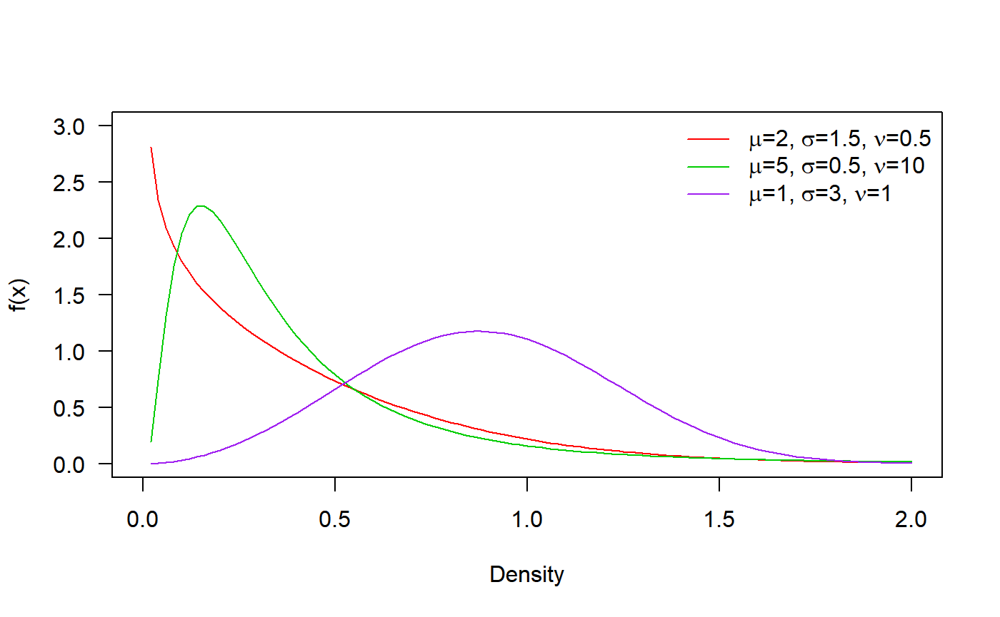
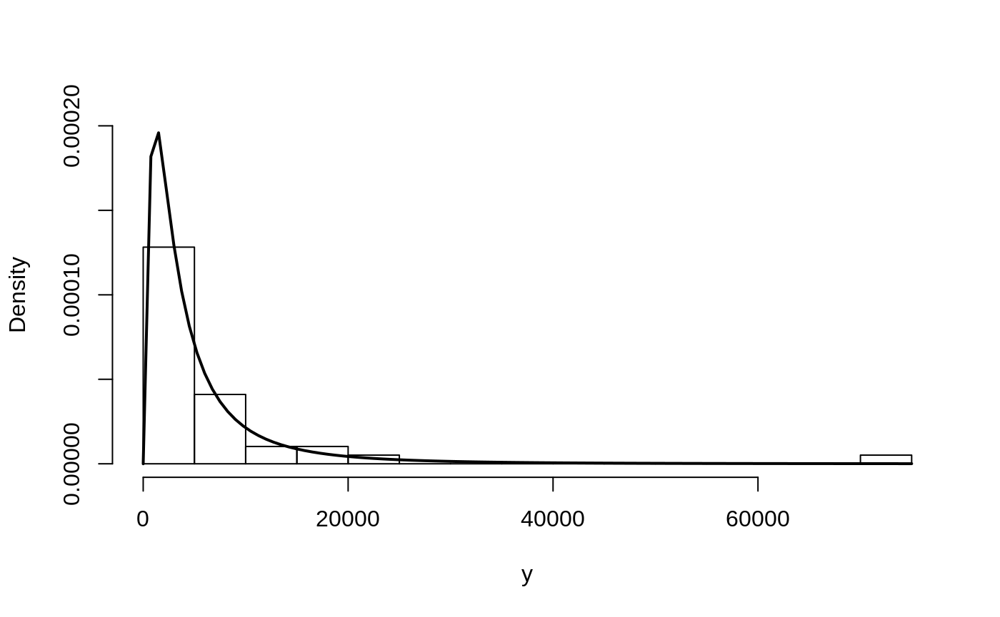
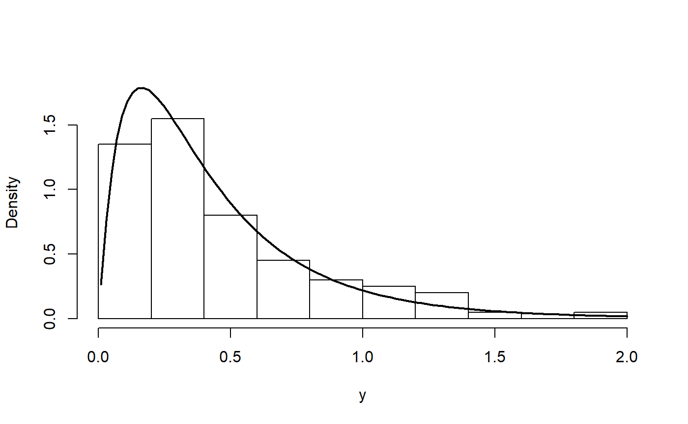
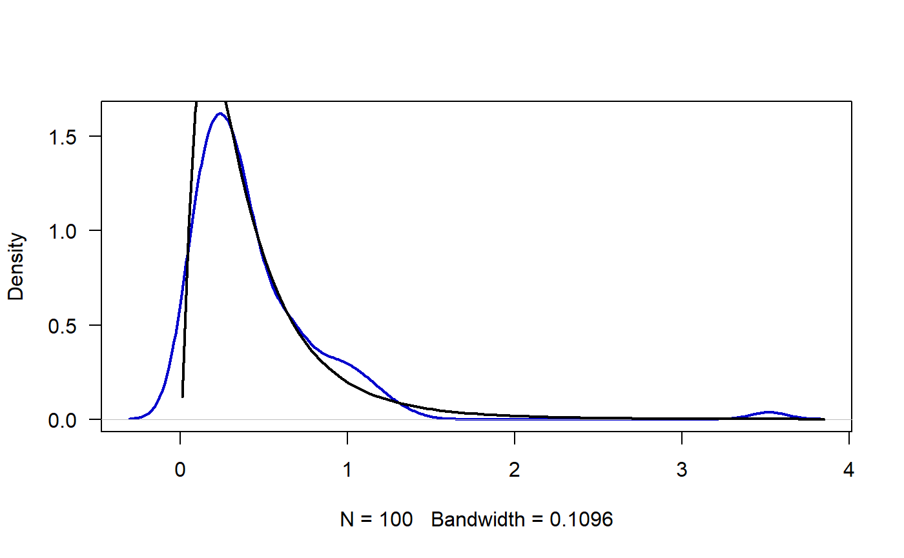
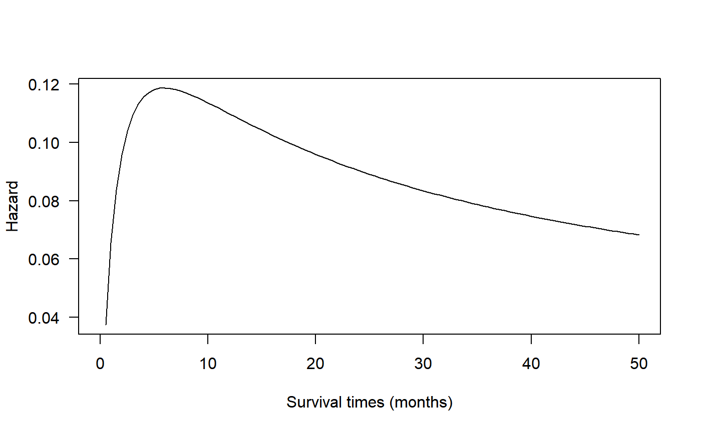

EW_distribution.RmdIn this vignette we explore the Exponentiated Weibull distribution.
The distribution was proposed by Mudholkar and Srivastava (1993) but here we used the parameterization given by Almalki and Nadarajah (2014).
\[f(x) = \nu \mu \sigma x^{\sigma-1} \exp(-\mu x^\sigma) (1-\exp(-\mu x^\sigma))^{\nu-1}, \quad x>0,\]
where \(\mu\), \(\sigma\), \(\nu\) > 0; \(\mu\) is a scale parameter and \(\sigma\) and \(\nu\) are shape parameters.
For some values of the parameters, the Exponentiated Weibull distribution yiels some known distributions, the next table shows those cases.
| \(\mu\) | \(\nu\) | \(\sigma\) | Distribution |
|---|---|---|---|
| 1 | Weibull | ||
| 2 | Generalized Rayleigh (GR) | ||
| 1 | Generalized Exponential(GE) | ||
| 1 | 1 | Exponential | |
| 1 | 2 | Rayleigh |
Next figure shows possible shapes of the probability density function for several values of the parameters:

The Floyd River flood rates are in vector y and the objective is to find the parameter for the exponentiated Weibull distribution.
y <- c(1460, 4050, 3570, 2060, 1300, 1390, 1720, 6280, 1360, 7440,
5320, 1400, 3240, 2710, 4520, 4840, 8320, 13900, 71500, 6250,
2260, 318, 1330, 970, 1920, 15100, 2870, 20600, 3810, 726,
7500, 7170, 2000, 829, 17300, 4740, 13400, 1940, 5660)To estimate the parameters for the exponentiated Weibull distribution we use the gamlss function from gamlss package.
require(RelDists)
require(gamlss)
mod <- gamlss(y~1, sigma.fo=~1, nu.fo=~1, family='EW',
control=gamlss.control(n.cyc=1500, trace=FALSE))The results for the fitted model can be found below.
exp(coef(mod, what='mu'))
## (Intercept)
## 0.2312985
exp(coef(mod, what='sigma'))
## (Intercept)
## 0.3266882
exp(coef(mod, what='nu'))
## (Intercept)
## 19.02633In the next figure we have the histogram for the data and the fitted density. We note that the fitted density explains better the observed data.
hist(y, freq=FALSE, ylim=c(0, 0.0002), breaks=15, main='')
curve(dEW(x, mu=0.23, sigma=0.33, nu=19.03), from=0.01, add=TRUE, lwd=2)
First, we simulate 100 values for the distribution using known parameters.
Now we use the gamlss function from gamlss package to estimate the parameters.
mod <- gamlss(y~1, sigma.fo=~1, nu.fo=~1, family='EW',
control=gamlss.control(n.cyc=250, trace=FALSE))
## Warning in RS(): Algorithm RS has not yet convergedTo obtain the fitted values for \(\mu\), \(\sigma\) and \(\nu\) we use the inverse link function \(\log()\).
exp(coef(mod, what='mu'))
## (Intercept)
## 6.37859
exp(coef(mod, what='sigma'))
## (Intercept)
## 0.3144143
exp(coef(mod, what='nu'))
## (Intercept)
## 40.56328The results show that estimated parameters are close to the true parameters \(\mu\), \(\sigma\) and \(\nu\).
In the next figure we have the histogram for the data and the fitted density. We note that the fitted density explains better the observed data.
hist(y, freq=FALSE, main='', ylim=c(0, 1.8))
curve(dEW(x, mu=exp(coef(mod, what='mu')),
sigma=exp(coef(mod, what='sigma')),
nu=exp(coef(mod, what='nu'))),
from=0.01, add=TRUE, lwd=2)
The data set corresponds to survival times of 51 head-and-neckcancer patients. The times are in days but they are converted to months (1 month = 30.438 days) as in the original paper. Below are the data.
dt <- data.frame(y=c(7, 34, 42, 63, 64, 74, 83, 84, 91, 108, 112, 129,
133, 133, 139, 140, 140, 146, 149, 154, 157, 160,
160, 165, 173, 176, 185, 218, 225, 241, 248, 273,
277, 279, 297, 319, 405, 417, 420, 440, 523, 523,
583, 594, 1101, 1116, 1146, 1226, 1349, 1412,
1417) / 30.438,
status=c(TRUE, TRUE, TRUE, TRUE, TRUE, FALSE, TRUE,
TRUE, TRUE, TRUE, TRUE, TRUE, TRUE, TRUE,
TRUE, TRUE, TRUE, TRUE, TRUE, TRUE, TRUE,
TRUE, TRUE, TRUE, TRUE, TRUE, FALSE, TRUE,
TRUE, TRUE, TRUE, TRUE, TRUE, FALSE, TRUE,
FALSE, TRUE, TRUE, TRUE, TRUE, TRUE, FALSE,
TRUE, TRUE, TRUE, FALSE, TRUE, FALSE,
FALSE, FALSE, TRUE))
plot(density(dt$y), main='')
rug(dt$y)
The variable y corresponds to survival time and status is a logical variable indicating if the patient died (TRUE) or not. To ensure convergence in the fit procedure we are going to use only survival times \(< 40\) months.
require(survival)
## Loading required package: survival
require(gamlss.cens)
## Loading required package: gamlss.cens
mod <- gamlss(Surv(y, status) ~ 1,
family=cens(EW), data=subset(dt, y < 40),
control=gamlss.control(n.cyc=5000, trace=FALSE))The fitted values are:
exp(coef(mod, what='mu'))
## (Intercept)
## 0.6219053
exp(coef(mod, what='sigma'))
## (Intercept)
## 0.5770429
exp(coef(mod, what='nu'))
## (Intercept)
## 4.36112The hazard function for this example can be obtained using the next code and the figure coincides with the figure 4 in Mudholkar et al (1995).
curve(hEW(x, mu=exp(coef(mod, what='mu')),
sigma=exp(coef(mod, what='sigma')),
nu=exp(coef(mod, what='nu'))),
ylab='Hazard', xlab='Survival times (months)', from=0, to=50, las=1)
Here we generate values from a Exponentiated Weibull distribution using the next model.
\[\begin{align*} y &\sim EW(\mu_i, \sigma_i, \nu), \\ \log(\mu_i) &= 2 + -3 \times x_1, \\ \log(\sigma_i) &= 3 - 2 \times x_2, \\ \nu &= 2, \\ x_1 &\sim Poisson (\lambda=2), \\ x_2 &\sim U(0, 1) \end{align*}\]
The code below can be used to generate \(n=200\) from the last model.
n <- 200
x1 <- rpois(n, lambda=2)
x2 <- runif(n)
mu <- exp(2 + -3 * x1)
sigma <- exp(3 - 2 * x2)
nu <- 2
y <- rEW(n=n, mu, sigma, nu)To estimate the parameters \(\mu\), \(\sigma\) and \(\nu\) we can use the next code.
mod <- gamlss(y~x1, sigma.fo=~x2, nu.fo=~1, family=EW,
control=gamlss.control(n.cyc=5000, trace=FALSE))and the results can be found with
coef(mod, what="mu")
## (Intercept) x1
## 2.028804 -2.647860
coef(mod, what="sigma")
## (Intercept) x2
## 2.871705 -1.996910
coef(mod, what="nu")
## (Intercept)
## 1.017197We note that the estimated parameters are close to the true parameter vector \(\boldsymbol{\theta} = (2, -3, 3, -2, 2)^\top\).